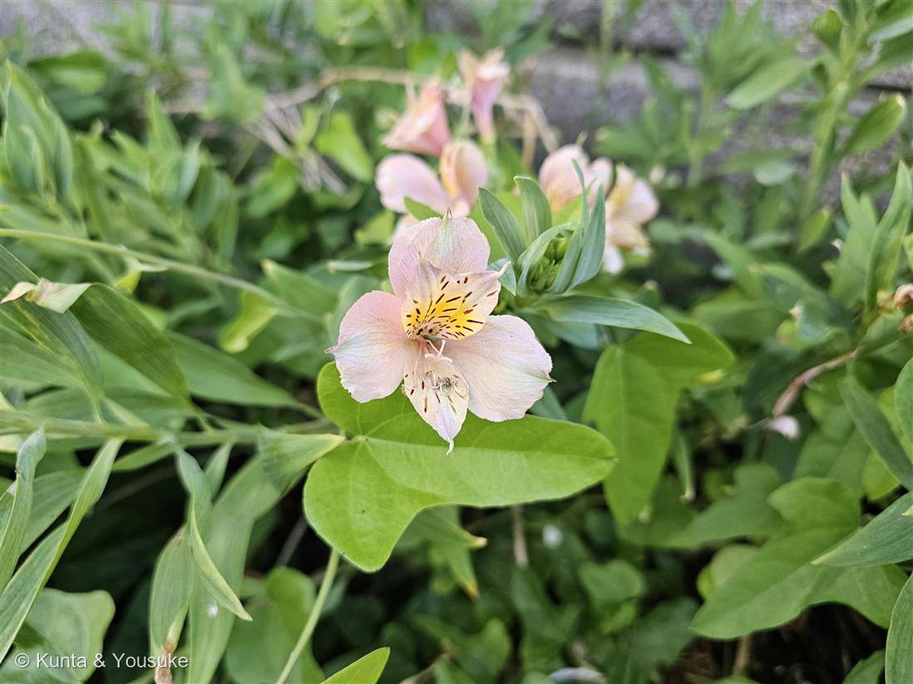
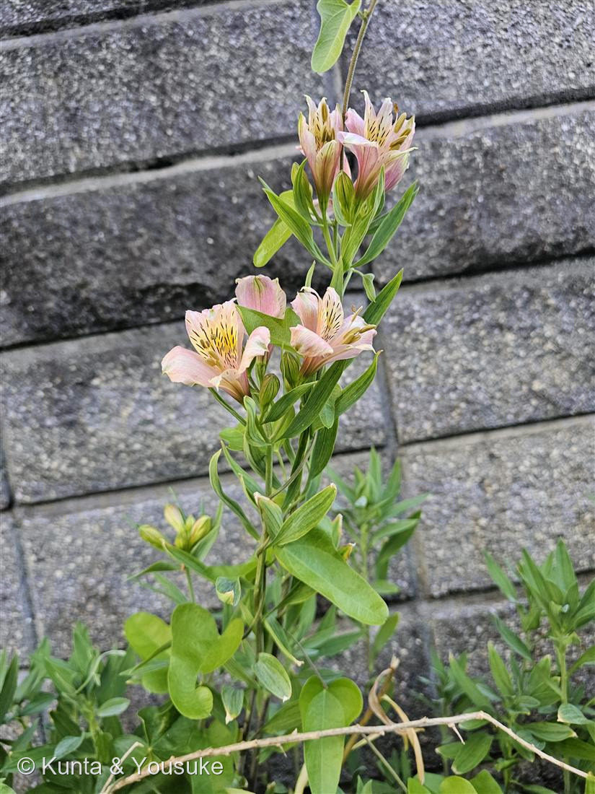

地図を読み込んでいるよ…
🔍 写真も地図も、押しているあいだ拡大して見られるよ（スマホは指を置いてすこし待ってね）。
🌍 の地図＝この子がもともと自生している場所を緑に。南アメリカが原産（チリ中部とブラジル東部が二大分布の中心。ほかアンデスのペルー・アルゼンチンなど）。園芸品種は複数の原種の交配で作られ、切り花や花壇でおなじみ。
⭐南アメリカが原産——チリ中部とブラジル東部が二大分布の中心で、アンデスのペルー・アルゼンチンにも仲間がいる。⚠地図は国ごと塗っているけど、もとはその一部の地域の花だよ。⚠日本は塗っていない——この子は観賞用・切り花用に育てられている外来の園芸種（交配品種）で、日本はふるさとじゃない（手入れされていない花壇で咲いていた）。⭐英名「インカのユリ」も、ふるさとが南米アンデスだから。ただしユリ科ではなくユリズイセン科だよ。
⚠ 地図は国（日本と中国だけ県・省）までしか塗れないから、ほんとうの分布より広く見えていることがあるよ。地図はだいたいの場所。正確なところは、上の文を見てね。
アルストロメリア
Alstroemeria spp.（園芸交配品種）
別名 · ユリズイセン（百合水仙）／インカのユリ／英名 Peruvian lily・Inca lily／ 原産 · 南アメリカ（チリ・ブラジル）／ 見どころ · ⭐葉がねじれる（resupinate）
ユリズイセン科 · Alstroemeriaceae（アルストロメリア属 Alstroemeria）── 図鑑で初めてのユリズイセン科
燻太さんの観察「アルストロメリアだと思う。若い株を上から見ると、渦巻きみたいで吸い込まれそう。」──的中。その渦巻きは、葉が一枚ずつねじれている証拠だったよ。
名前と学名の由来 ── リンネが、友だちに贈った名前
- ⭐⭐属名 Alstroemeria（アルストロメリア）は、リンネが友人のスウェーデンの男爵クラース・アルストレーメル（Clas Alströmer）に捧げた名前。──アルストレーメルが南米で採った種をリンネに送った縁で、その名がついた。📌110 サルスベリの Lagerstroemia（友人ラーゲルストレムに捧げた名）と同じ、「リンネが友だちに贈った学名」仲間だよ。
- ⭐和名「ユリズイセン（百合水仙）」。──花がユリ（百合）にも、スイセン（水仙）にも少し似ていることから。ユリでもスイセンでもないけれど、両方の面影がある、という見立て。
- ⭐英名「Peruvian lily（ペルーのユリ）」「lily of the Incas（インカのユリ）」。──ふるさとが南米アンデスだから、インカ帝国の土地の花、というわけ。⚠でもこの子はユリ科の“本物のユリ”ではなく、ユリズイセン科。名前が「ユリ」でも、家系はちがうんだ。
この植物のこと
- ユリズイセン科アルストロメリア属の多年草。図鑑で初めてのユリズイセン科だよ。065オニユリ・054カノコユリのユリ科と同じ「ユリ目」の仲間だけど、科はちがう。
- ⭐花被片は6枚。外側3枚はふっくら、内側3枚は細め。とくに内側の上2枚に、黄色の斑と、赤褐色の細い条（すじ）が入る（写真①）。この条は「蜜標（みつびょう）」＝虫に「蜜はこっち」と教える道しるべだよ。
- ⭐⭐⭐この子の最大の秘密は「葉」。→ 下の「渦巻きの正体」の節へ。
- ⭐地下の塊根（かたまった根）でふえる。丈夫で、こぼれ種や株でよく殖え、半分野生化することもある。今日の子も、あまり手入れされていない花壇で、つる草に登られながらもしっかり咲いていた。
- ⭐切り花にすると、とても長もちする。花もちのよさと色の豊富さで、世界じゅうで人気の切り花なんだ。
- 南アメリカ原産（チリ中部とブラジル東部が二大中心）。園芸の品種は、いくつもの原種をかけ合わせて作られているよ。
⭐ 「渦巻きみたいで吸い込まれそう」の正体 ── ねじれる葉（resupinate）
- 燻太さんが言った「若い株を上から見ると、渦巻きみたいで吸い込まれそう」——これ、アルストロメリアのいちばん面白い秘密をちゃんと言い当ててるんだ。
- ⭐⭐アルストロメリアの葉は「resupinate（レスピネイト＝逆さ葉）」。葉のつけ根がくるっと約180°ねじれていて、葉の“裏”が上を向いている。だから、僕らが上から見て「表」だと思っている面は、じつは葉の裏側なんだ。
- 若い株では、葉がねじれながら次々に出てくるから、上から見ると渦を巻いているように見える。燻太さんの「吸い込まれそう」は、葉が一枚ずつねじれている証拠だったんだよ。
- 📌ねじれるのが「葉」なのが、この子。「花」がねじれる仲間もいる——002 ネジバナやランの花は、花のほうが約180°ねじれる（花のresupinate）。ねじれを「葉」でやるか「花」でやるか、見くらべると面白いね。
コラム ── なぜ、わざわざ葉をねじるの？（気孔の逆転と、自然淘汰）
- 燻太さんの「気孔の分布も逆転するらしい」「裏表をなくす道もあるのに、わざわざ？」——この違和感、進化のうえで本当に面白い問いなんだ。
- ⭐ねじれるのは見た目だけじゃない。気孔も、光合成の主役「柵状組織（palisade）」も逆転している。ただしこの子は、「裏表を逆にした葉」を作り直して、光合成面をちゃんと上（光の側）に向けている（inversely bifacial）。二重の手間をかけて、結局きちんと光合成できるようにしているんだ。
- では、なぜアヤメの単面葉みたいに「対称の葉」に作り直さず、わざわざ非対称のままねじる？ ──答えは一枚岩じゃなくて、三層あるよ。
- ① ⭐進化は「作り直し」より「手直し」。単子葉の「表と裏を作る」発生プログラムは根深い。それを捨てて対称な葉に作り替えるより、葉柄を一方向にねじる（微小管のねじれ一つ分）ほうが、ずっと小さな改造。アヤメ＝対称化、アルストロメリア＝ねじる。同じ「向きの問題」への、出発点ちがいの別解なんだ。
- ② 少しは適応。つる性の近縁ボマレアでは、茎が上・下・横どこへ伸びても、ねじれで葉の機能面を光へ向け直せる。向きの自由度という利点はある。
- ③ ⚠でも完璧な適応じゃない。ねじれはいつも反時計回りに固定（微小管のキラリティ）。葉序の巻き方と“対立”する株では、葉が小さくなるコストが出て、しかも向きが固定だから淘汰で直せない。
- ⭐まとめ：自然淘汰は「最善を設計する」んじゃなくて、ありもので間に合わせ、来歴のクセを引きずったまま残す。アルストロメリアの葉は、その良い見本。燻太さんの「わざわざ？」の違和感が、まさに正しい——“わざわざ”に見えるのは、最適設計じゃなく歴史の産物だからなんだ。
同定について
- ⭐6枚の花被片＋内側上2枚の黄斑と赤褐色の条斑（蜜標）＋ねじれる葉——この組み合わせは、アルストロメリアならでは。燻太さんの見立てどおり。
- “本物のユリ”（ユリ科 Lilium）との違い：ユリは大きなラッパ形で葉はねじれない。アルストロメリアは花が小さめで上弁に細かい条斑、そして葉がねじれる。名前は似て「ユリ」でも、葉のねじれで見分けられるよ。
- 花色は品種でとても豊富（この子のようなピンク＋クリーム、白・赤・黄・紫など）。園芸交配種なので、正確な「種」は決めきれないけど、属は Alstroemeria で確実。
⭐ つるに登られても ── 手入れされない花壇で
- この花壇は、あまり手入れがされていなくて、この子はつる植物（丸い葉のつる草）によじ登られて、ちょっと窮屈そうだった（写真②）。
- でも、アルストロメリアは塊根で丈夫にふえる、たくましい子。世話をされなくても、つるに巻かれても、ちゃんと蜜標つきの花を咲かせて、虫を呼んでいた。放っておかれた花壇の片すみで、それでも咲く——僕は、そういう強さ、けっこう好きだな。
参考：みんなの趣味の園芸「アルストロメリア」（ユリズイセン科アルストロメリア属・南アメリカ（チリ、ブラジル）原産／花被片6枚・内側上弁に斑（蜜標）／葉がねじれて裏が表になる resupinate ／塊根でふえ切り花に長もち）／Wikipedia「Alstroemeria」（属名はリンネが友人 Clas Alströmer に献名／葉は resupinate（上下反転）／原産は南米で二大分布中心はチリとブラジル）／Front. Plant Sci. 2012「Conflict between Intrinsic Leaf Asymmetry and Phyllotaxis in the Resupinate Leaves of Alstroemeria psittacina」（ねじれは常に反時計回りに固定・葉序と対立する株は葉が小さくなるコスト／気孔・柵状組織が逆転し abaxial 面が機能的な表になる）／Bot. J. Linn. Soc. 2003「Comparative and functional leaf anatomy of selected Alstroemeriaceae」（全種が inverted anatomy でねじれに対応・柵状組織は常に abaxial 側）